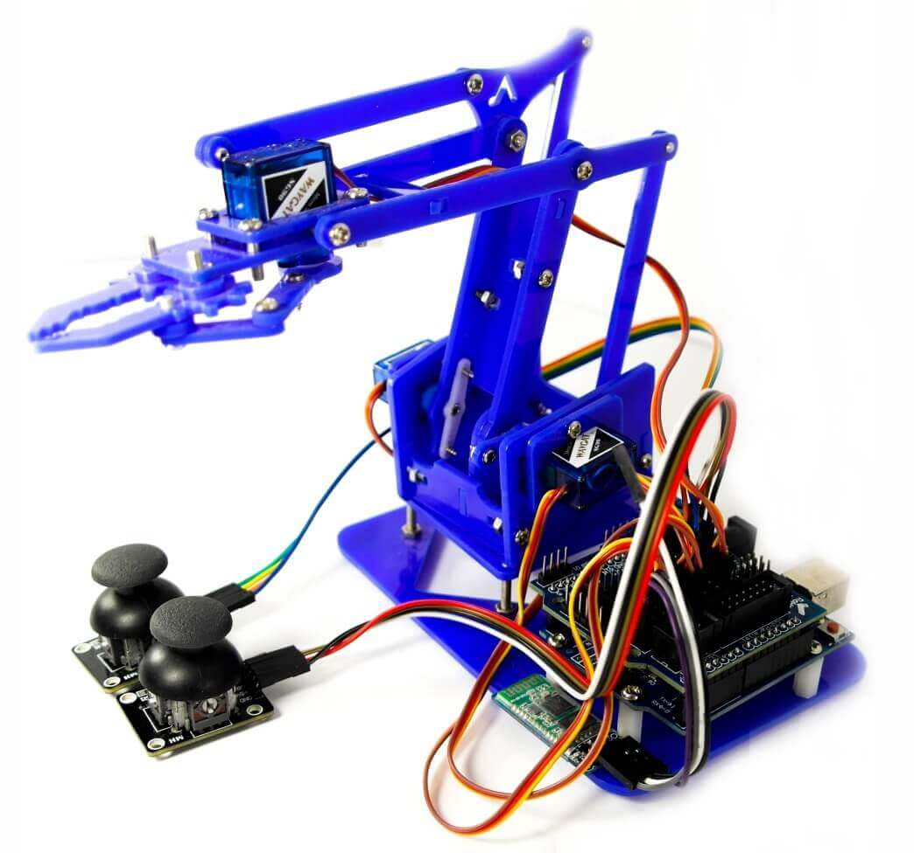

¿Qué es?
Un brazo inteligente capaz de jugar "3 en raya" (Tic-Tac-Toe) usando Inteligencia Artificial y visión por computadora. Representa la convergencia perfecta entre robótica avanzada y algoritmos inteligentes.
¡Experimenta la **interacción inteligente** con la robótica del futuro, hoy mismo!
Nuestros Números Impresionantes
¿Por qué lo hicimos?
Creamos un sistema educativo, intuitivo y divertido que permite aprender de forma práctica sobre tecnologías del futuro:
- 🤖 Robótica Avanzada
- 💻 Programación Inteligente
- 🧠 Algoritmos de IA
- 👁️ Visión por Computadora
Lo que logramos
- ⚡ Movimiento Fluido y Estable con joystick
- 🎯 Precisión Milimétrica en cada Servo
- 🧠 IA que toma decisiones Estratégicas
- 🔄 Integración exitosa del algoritmo MiniMax
- 🎮 Control híbrido: IA y joysticks
- 🤝 Trabajo colaborativo y cumplimiento de plazos
- 📊 Optimización de rendimiento en tiempo real
¿Cómo funciona?
El sistema utiliza visión por computadora para el reconocimiento del tablero, programación precisa de servomotores y control inteligente del brazo mediante IA y joysticks.
Componentes Clave:
- 🔧 Arduino Uno (Microcontrolador)
- 🕹️ Joysticks Analógicos
- ⚙️ Servomotores de Alta Precisión
- 💾 Software Arduino IDE
- 👁️ Visión OpenCV (Python)
- 🧠 Algoritmo MiniMax (IA)
Etapas de Desarrollo:
- 📐 Diseño de Conexiones
- 🔬 Programación Inicial para Pruebas
- 👀 Pruebas de Visión
- ⚡ Optimización de Movimientos
- 🤖 Integración de IA
- 🎓 Aplicación de Conocimientos
En Acción
Mira nuestro Tic-Tac-Toe Robótico en funcionamiento, demostrando su inteligencia artificial y precisión mecánica en cada movimiento. **¡Prepárate para sorprenderte!**
Futuro del Proyecto
Nuestro sistema tiene un potencial ilimitado de expansión. Las futuras mejoras incluyen:
- 📡 Sensores de Proximidad Avanzados
- 🧠 Aprendizaje Automático de Nuevas Tareas
- 👋 Control por Gestos y Voz
- 🌐 Conectividad IoT
- 🎮 Múltiples Juegos Interactivos
Conclusiones
Hemos creado un sistema funcional, accesible y con enorme potencial educativo. Este proyecto demuestra que la robótica y la inteligencia artificial no son solo del futuro, sino del presente, y pueden ser herramientas poderosas para el aprendizaje y la innovación.
¡Listo para el desafío?
Descubre más sobre este innovador proyecto y su potencial para revolucionar la educación en robótica.
Ver Código en GitHub